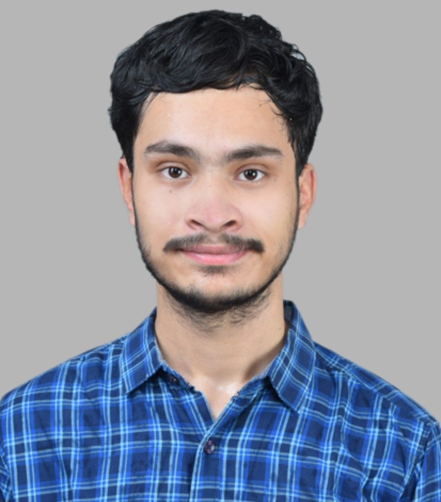

Software Developer building RAG pipelines, multi-agent workflows, and the backend systems that hold them together. Currently based in India.
Software Developer with experience in generative AI and scalable backend systems — RAG pipelines, LLM-powered applications, and multi-agent workflows. Proficient in Python backend development including Django and API-driven architectures, improving system performance and efficiency.